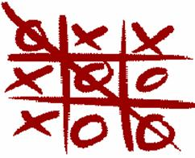

|
F |
Say
Goodbye to Tic-Tac-Toe Input: Standard Input Output: Standard Output |

Here is the description of this new 2-player game -
- A 1 X N grid will be given.
- In each turn A player can mark an unmarked cell by an 'X'
or by an 'O' (No Zero it is big ‘O’).
- No two adjacent 'X's are allowed in this game.
- No two adjacent 'O's are allowed in this game.
- The player who marks the last cell wins the game.
Let's have an example for N = 3. Suppose first player mark
the leftmost cell with an 'X'. Then the grid will look like this -
From this state, the winning move of the
second player is to mark the rightmost cell with an 'O'.
Now first player has no move, because in the only empty cell she cannot mark 'X' and cannot mark 'O' because the left of this cell is already marked 'X' and the right of this cell is marked 'O'. The second player will win.
But this is not an optimal example for first player. If in first move, the
first player marks the middle cell with any one of 'X' or 'O', she will win.
Now about Bob's computer game,
Your are given the state of the grid after Bob's departure and your task is to
determine whether it is possible to win against computer from this state for
Input
The input starts with an integer T (T < 10001), which specifies the number of test cases. In each of the next T line there is a string which represents the state of the game after Bob's departure. Here the length of the string is N(0<N<101). In this string besides 'X' and 'O', another character '.' is used, which represents an unmarked cell.
For each input output a single line, "Possible.", If it is possible to win against computer, "Impossible." otherwise.
3...X..O |
Possible. |
Problemsetter:
Special Thanks: Manzurur Rahman Khan (Sidky)